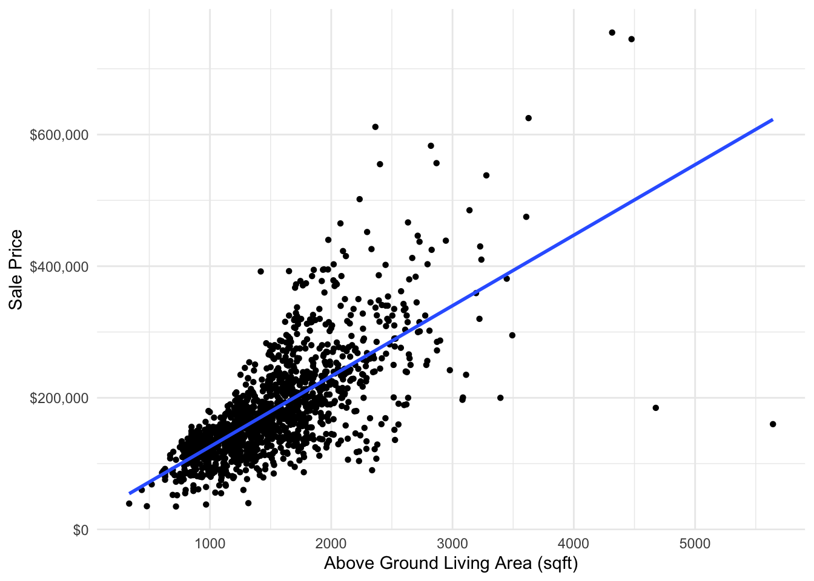
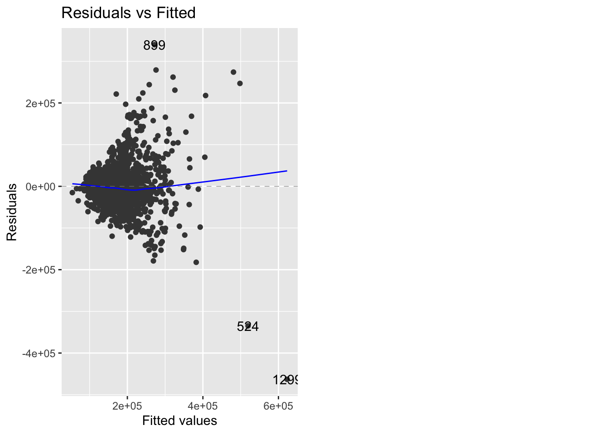
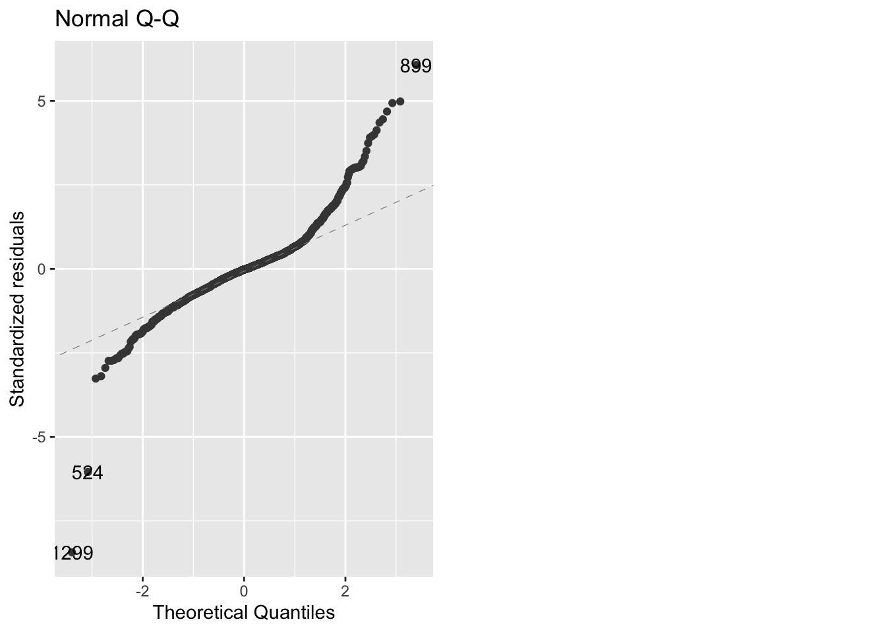

#LOAD PACKAGES
library(tidyverse)
library(scales)
#LOAD DATA
housingdata <- read.csv("https://raw.githubusercontent.com/abhiram-ds/housing_price_adv_regression/main/train.csv")STAT 118: Notes M
Simple Linear Regression
The data comes from Kaggle. It describing the sale of individual residential property in Ames, Iowa from 2006 to 2010.
Motivation
housingdata %>%
ggplot(aes(x=GrLivArea, y=SalePrice)) +
geom_point(pch=16) +
geom_smooth(method=lm, se=FALSE) +
scale_y_continuous(labels = dollar_format(prefix="$")) +
labs(x = "Above Ground Living Area (sqft)", y = "Sale Price") +
theme_minimal()`geom_smooth()` using formula = 'y ~ x'
Correlation
Correlation always takes on values between -1 and 1, describes the strength of the linear relationship between two variables.

cor(housingdata$GrLivArea, housingdata$SalePrice)[1] 0.7086245Correlation Does Not Imply Causation


Could be:
Random coincidence
Reverse causality
Confounding variable
Equations and Interpretation of Coefficients
Want to fit a linear model:
\[ \hat{y} = b_0 + b_1x \]
To fit a linear regression model we need the lm() function.
#lm(dependent_variable ~ independent_variable, data = dataset)
lm(SalePrice ~ GrLivArea, data=housingdata)
Call:
lm(formula = SalePrice ~ GrLivArea, data = housingdata)
Coefficients:
(Intercept) GrLivArea
18569.0 107.1 #OR
lm(SalePrice ~ GrLivArea, data=housingdata) %>%
summary()
Call:
lm(formula = SalePrice ~ GrLivArea, data = housingdata)
Residuals:
Min 1Q Median 3Q Max
-462999 -29800 -1124 21957 339832
Coefficients:
Estimate Std. Error t value Pr(>|t|)
(Intercept) 18569.026 4480.755 4.144 3.61e-05 ***
GrLivArea 107.130 2.794 38.348 < 2e-16 ***
---
Signif. codes: 0 '***' 0.001 '**' 0.01 '*' 0.05 '.' 0.1 ' ' 1
Residual standard error: 56070 on 1458 degrees of freedom
Multiple R-squared: 0.5021, Adjusted R-squared: 0.5018
F-statistic: 1471 on 1 and 1458 DF, p-value: < 2.2e-16Tidy it up with broom 
library(broom)
library(kableExtra)
#prettier
lm(SalePrice ~ GrLivArea, data=housingdata) %>%
tidy() %>%
kbl() %>%
kable_styling()| term | estimate | std.error | statistic | p.value |
|---|---|---|---|---|
| (Intercept) | 18569.0259 | 4480.754549 | 4.144174 | 3.61e-05 |
| GrLivArea | 107.1304 | 2.793621 | 38.348207 | 0.00e+00 |
To interpret the y-intercept coefficient (\(b_0\)):
- When
xis 0, we predictyto be \(b_0\). - In this case, when a house has NO above ground square footage, we predict it will cost $18,569.
Tip
Note that the interpretation of the y-intercept doesn’t always make sense.
In this case, what does it mean for a house to have no above ground square footage? Is it only a basement? Only a plot of land with no house?
To interpret the slope coefficient (\(b_1\)):
- For every 1 unit increase in
x, we expect a \(b_1\) unit increase iny, on average. - In this case, for every 1 additional square foot above ground in a house, we expect an $107 increase in the sales price of the house.
Assumptions, Residuals, and Residual Plots
Assumptions of Linear Regression:
- Linearity: The relationship between X and the mean of Y is linear – look at scatterplot
- Homoscedasticity: The variance of residual is the same for any value of X – look at fitted vs. residuals plot
- Independence: Observations are independent of each other – think about context
- Normality: For any fixed value of X, Y is normally distributed. – check the QQ plot
Check the scatterplot
housingdata %>%
ggplot(aes(x=GrLivArea, y=SalePrice)) +
geom_point(pch=16) +
geom_smooth(method=lm, se=FALSE) +
scale_y_continuous(labels = dollar_format(prefix="$")) +
labs(x = "Above Ground Living Area (sqft)", y = "Sale Price") +
theme_minimal()`geom_smooth()` using formula = 'y ~ x'Some examples of nonlinear plots:

fitted vs. residuals plot and QQplots
# save our lm() as fit
fit <- lm(SalePrice ~ GrLivArea, data=housingdata)library(ggfortify)
autoplot(fit, which=1)
Some other examples:

QQ plot
autoplot(fit, which=2)
Some other examples:

Prediction
Suppose you are selling your 2000 sqft house. Use the model above to make a prediction for the
newdata <- data.frame(GrLivArea = c(2000))
predict(fit, newdata) 1
232829.7 Interpolation vs. Extrapolation
Interpolation is a method of estimating a hypothetical value that exists within a data set.
Extrapolation is a method of estimation for hypothetical values that fall outside a data set.